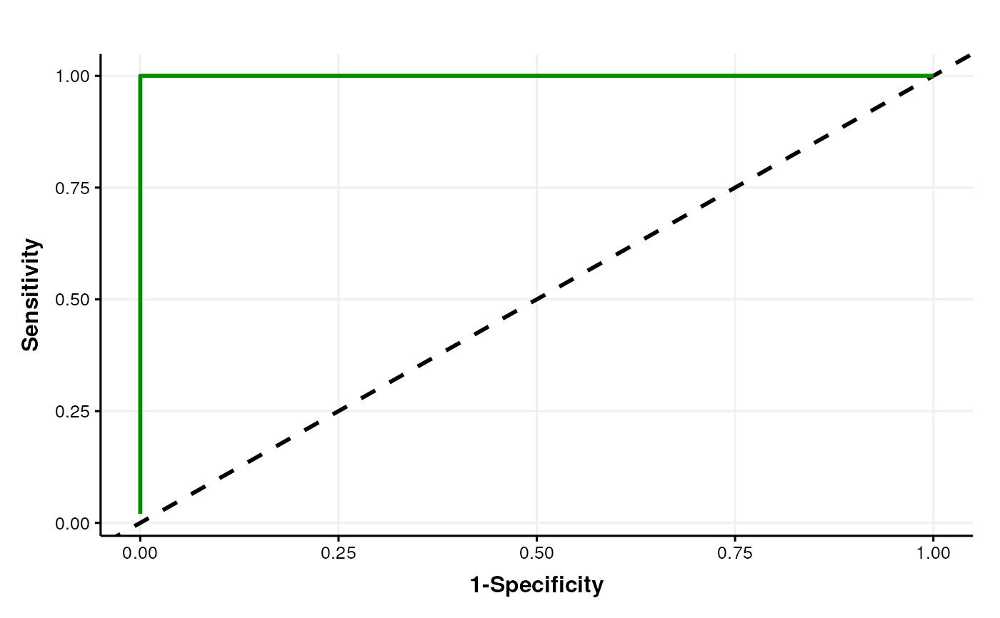

A Receiver Operator Characteristic (ROC) plot for PLSDA models computed by adjusting the threshold for assigning group labels from PLS predictions.
Value
A
plsda_roc_plot
object. This object has no output slots.
See chart_plot in the struct package to plot this chart object.
Inheritance
A plsda_roc_plot object inherits the following struct classes: [plsda_roc_plot] >> [chart] >> [struct_class]
References
Liland K, Mevik B, Wehrens R (2023). pls: Partial Least Squares and Principal Component Regression. R package version 2.8-3, https://CRAN.R-project.org/package=pls.
Wickham H (2016). ggplot2: Elegant Graphics for Data Analysis. Springer-Verlag New York. ISBN 978-3-319-24277-4, https://ggplot2.tidyverse.org.
Examples
M = plsda_roc_plot(
factor_name = "V1",
ycol = 1)
D = iris_DatasetExperiment()
M = mean_centre()+PLSDA(factor_name='Species')
M = model_apply(M,D)
C = plsda_roc_plot(factor_name='Species')
chart_plot(C,M[2])
